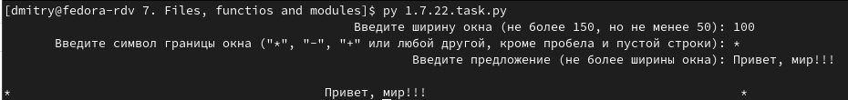

22. Центрируем строку.
Условие:
В программу нужно ввести ширину окна, границу окна (любой символ) и предложение, которое поместится в это окно (это три input-а).
Эти три параметра передать в функцию, которая вернёт результат для печати. Это предложение по центру нашего окна на экране.

Код:
def my_function(width, symbol, proposal):
result = (symbol + ((width - len(proposal)) // 2) * " " + proposal + ((width - len(proposal) - (width - len(proposal)) // 2) * " ") + symbol)
return result
while True:
try:
width = int(input("%100s" % "Введите ширину окна (не более 150, но не менее 50): "))
if 50 <= width <= 150:
break
else:
print("%99s" % "Вы ввели очень широкое окно или очень узкое. Попробуйте ещё раз.")
continue
except:
print("%99s" % "Вы ввели не цифры. Попробуйте ещё раз.")
while True:
symbol = input("%100s" % "Введите символ границы окна (\"*\", \"-\", \"+\" или любой другой, кроме пробела и пустой строки): ")
if len(symbol) == 0 or symbol[0] == " ":
print("%99s" % "Вы ввели пробел или пустую строку.")
continue
else:
symbol = symbol[0]
break
while True:
proposal = input("%100s" % "Введите предложение (не более ширины окна): ")
if len(proposal) > (width - 2):
print(("%99s" % "Вы ввели слишком длинное предложение. Попробуйте ещё раз."))
continue
else:
break
result = my_function(width, symbol, proposal)
print()
print(result)